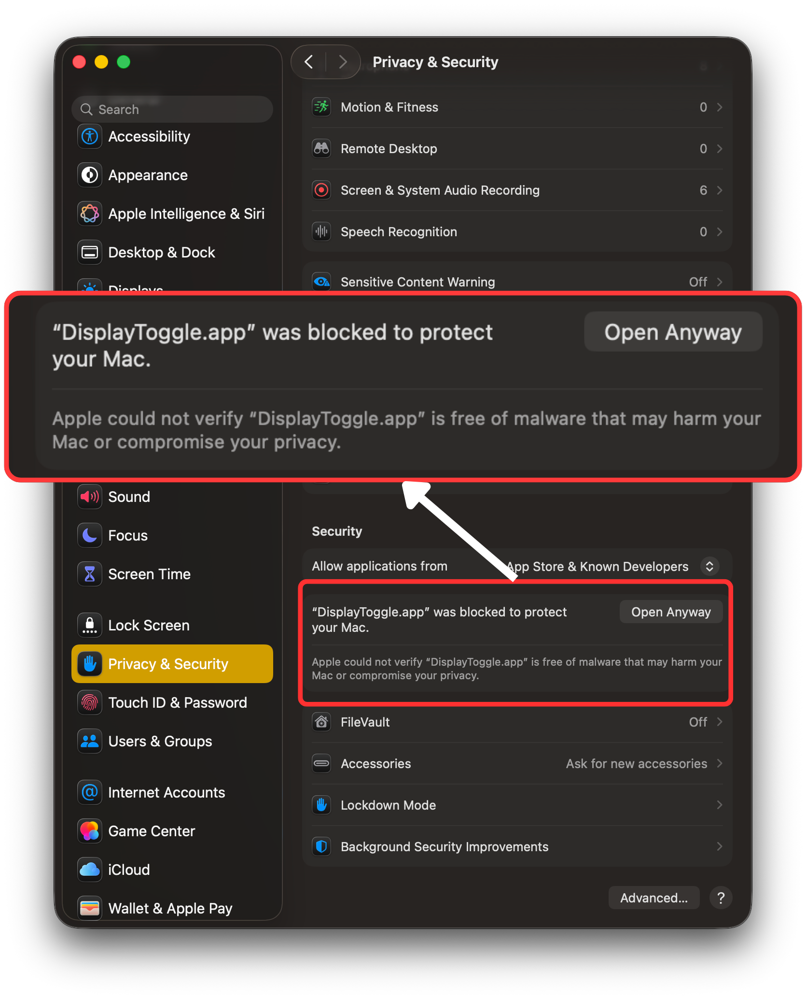
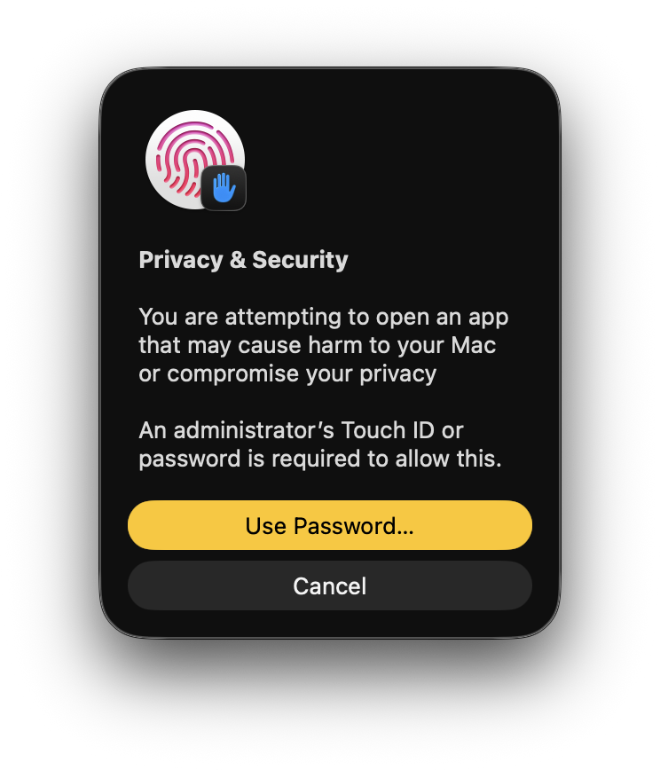

First Launch on macOS
Since DisplayToggle is distributed outside the App Store, macOS may block it the first time you open it. Follow these steps — only once.
STEP 1
App Blocked
macOS may block the app on first launch.

STEP 2
Open Anyway
Go to Privacy & Security and click “Open Anyway”.

STEP 3
Confirm
Approve the system prompt using password or Touch ID.
